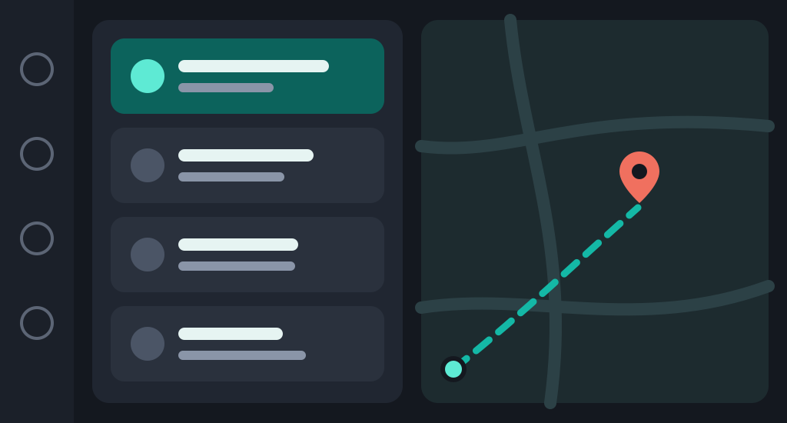
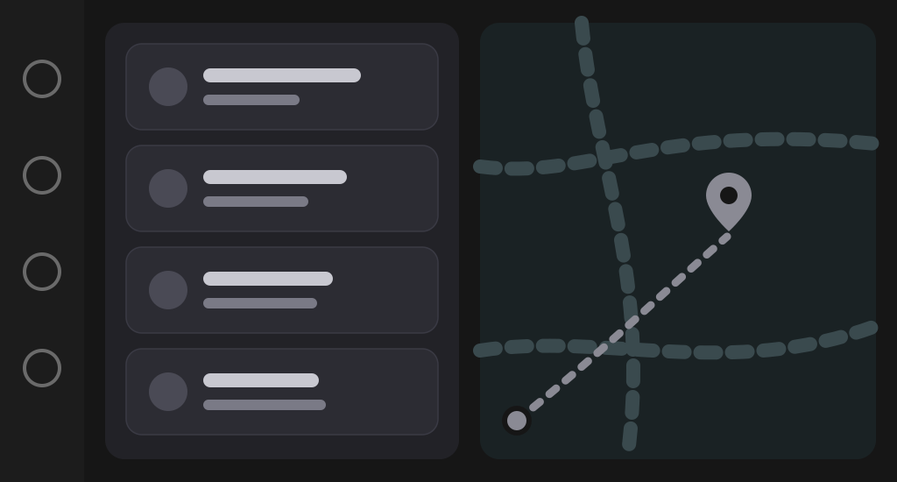

주유소를부탁해
내 주변 주유소, 공식 가격으로 한눈에
지금 있는 곳 반경 5km 안의 주유소를 한국석유공사 오피넷 가격으로 보여 드려요. 내 연료를 고르고, 가까운 순이나 저렴한 순으로 정렬하고, 바로 길 안내까지.
Android: Google Play에서 테스트 참여 · iPhone: 곧 출시


오피넷 공식 가격한국석유공사
가까운 순 · 저렴한 순버튼 한 번으로 정렬
반경 5km지금 있는 곳 기준
5반경(km)
4연료 종류
2언어
2정렬 방식
브랜드별로, 내가 넣는 연료로
- SK에너지
- GS칼텍스
- HD현대오일뱅크
- S-OIL
- 자영알뜰
- 고속도로알뜰
- 농협알뜰
- E1
- SK가스
- 휘발유
- 고급휘발유
- 경유
- LPG
01내 연료
내가 넣는 연료부터 고르세요
처음 켜면 연료를 고르는 화면이 나와요. 고른 연료의 가격만 보여 주고, 나중에 언제든 바꿀 수 있어요.
- 휘발유 · 고급휘발유 · 경유 · LPG
- 브랜드별로 골라 보기
- 오피넷 제품 코드 그대로 표시
- 선택한 연료 가격만 보여 줌
02정렬 · 길 안내
가까운 순, 저렴한 순으로 바로
목록을 거리순이나 가격순으로 바꾸고, 지도에서 위치를 확인한 뒤 티맵, 카카오, 네이버로 길 안내를 시작해요. 첫 실행 안내가 화면 위에서 하나씩 알려 줘요.
- “가까운 순” · “저렴한 순” 버튼
- 지도에서 주유소 위치 확인
- 티맵 · 카카오 · 네이버로 길 안내
- 처음 한 번 보는 사용 안내
03내 계정
즐겨찾기와 주유 기록은 계정에
자주 가는 주유소와 주유 기록을 Google 계정에 저장해요. 휴대폰을 바꿔도 이어지고, 메뉴에서 공지와 업데이트도 볼 수 있어요.
- 즐겨찾는 주유소
- 주유 기록 (원 · 리터)
- 가격이 내리면 앱 안에서 알림
- 공지사항 · 업데이트 · 피드백 보내기
04차 화면
운전 중에는 Android Auto · CarPlay로
Android에서는 휴대폰을 차에 연결하면 차 화면에 가까운 주유소 목록과 지도가 떠요. 고르면 바로 길 안내로 이어져요. iPhone 앱이 나오면 CarPlay도 같은 방식으로 지원할 예정이에요.

곧 지원준비 중
- 차 화면에 맞춘 큰 목록
- 휴대폰에서 고른 연료 그대로
- 목록에서 바로 길 안내
Android Auto를 지원하는 차량 또는 디스플레이에서 사용 · 휴대폰에서 Google 로그인 후 이용. CarPlay는 iPhone 앱 출시와 함께 지원할 예정이에요.
앱 하나에 다 있어요
주유 전에 필요한 것만, 크고 분명하게.
공식 가격
가격은 한국석유공사 오피넷에서만 가져와요.
즐겨찾기
자주 가는 주유소를 저장해 두고 바로 열어요.
가격 알림
즐겨찾는 주유소 가격이 내리면 앱 안에서 알려 줘요.
주유 기록
날짜, 리터, 금액을 적어 두고 달마다 합계를 봐요.
한국어·영어
앱을 한국어나 영어로 쓸 수 있고, 언어는 언제든 바꿀 수 있어요.
사용 안내
처음 켜면 실제 화면 위에서 하나씩 알려 주고, 메뉴에서 다시 볼 수 있어요.
안심하고 쓰세요
공식 가격만
값이 없으면 없다고 알려 드리고, 숫자를 만들어 채우지 않아요.
재고는 추측하지 않아요
오피넷은 주유소 재고를 공개하지 않아요. 그래서 재고를 짐작해 표시하지 않아요.
위치는 조회할 때만
위치는 주변 주유소를 찾을 때만 쓰고, 이동 기록으로 저장하지 않아요.
언제든 계정 삭제
앱의 메뉴 → 내 계정 → 내 계정 삭제에서 계정과 데이터를 지울 수 있어요.
주유소를부탁해는 특정 주유소 브랜드나 한국석유공사와 관련 없는 독립 앱이에요. 가격은 오피넷 공개 데이터예요.
자주 묻는 질문
돈이 드나요?
아니요. 가입비도, 월 요금도, 유료 기능도 없어요.
로그인해야 하나요?
지도, 목록, 가격, 유종, 길 안내는 로그인 없이 써요. 즐겨찾기, 주유 기록, 가격 알림, 기기 간 동기화만 Google 계정을 써요.
내 위치는 어디로 가나요?
주변 주유소를 찾을 때 오피넷 조회에만 쓰여요. 이동 기록으로 저장하지 않아요.
가격은 어디서 오나요?
한국석유공사 오피넷 공개 가격이에요. 주유소 현장 가격과 조금 다를 수 있어요.
재고(기름 있음/없음)도 보이나요?
아니요. 오피넷이 재고를 공개하지 않아서 추측해 보여 주지 않아요.
계정과 데이터는 어떻게 지우나요?
앱의 메뉴 → 내 계정 → 내 계정 삭제를 누르거나, 아래 “계정 및 데이터 삭제” 페이지를 보세요.
Android Auto에서 쓸 수 있나요?
네. 휴대폰을 차에 연결하면 차 화면에 가까운 주유소 목록과 지도가 나와요.
iPhone에서도 쓸 수 있나요?
iPhone 앱은 App Store에 곧 나와요. 지금은 Android에서 테스트에 참여할 수 있어요.
CarPlay에서도 쓸 수 있나요?
iPhone 앱 출시와 함께 CarPlay도 지원할 예정이에요.